05. Directive
Praktikum – Bagian 1: ngIf
Cara Pertama
- Buka file courses.component.ts kemudian tambahkan code seperti berikut:
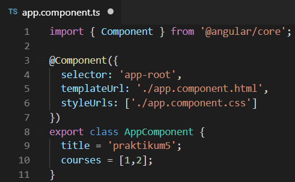
- Buka file courses.component.html lalu tambahkan code seperti berikut:
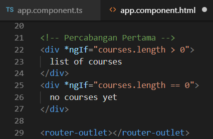
- Jalankan localhost maka hasilnya seperti berikut:
- Jika array pada file app.component.ts (courses=[];) dikosongkan maka hasilnya:
Cara Kedua
- buka file app.component.html modifikasi kodenya menjadi berikut:
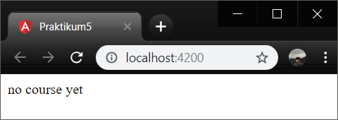
- jalankan localhost dengan kondisi array pada file app.component dengan array kosong

- Jalankan localhost maka hasilnya seperti berikut:
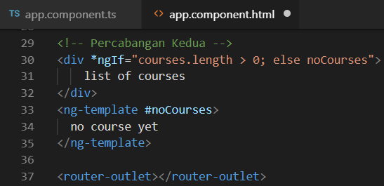
- Array yang ada isinya
- Hasilnya seperti berikut:
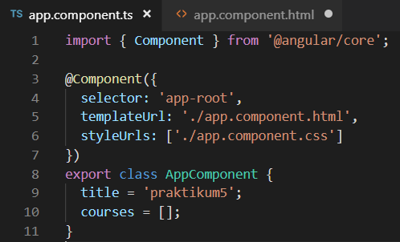
Cara Ketiga
- buka file app.component.html modifikasi kodenya menjadi berikut:
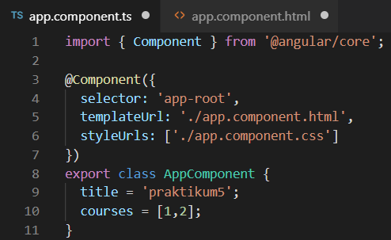
- jalankan localhost dengan kondisi array pada file app.component dengan array kosong
- Jalankan localhost maka hasilnya seperti berikut:
- Array yang ada isinya
- Hasilnya seperti berikut:
Praktikum – Bagian 2: Hidden Property
- buka file app.component.html modifikasi kodenya menjadi berikut:

- Jalankan localhost maka hasilnya seperti berikut:
- Selain contoh diatas kita juga dapat memberikan property seperti berikut:
- Dengan catatan pada app.component.ts pada courses terdapat array courses dengan nilai 1 dan 2
- Jalankan localhost maka hasilnya seperti berikut:
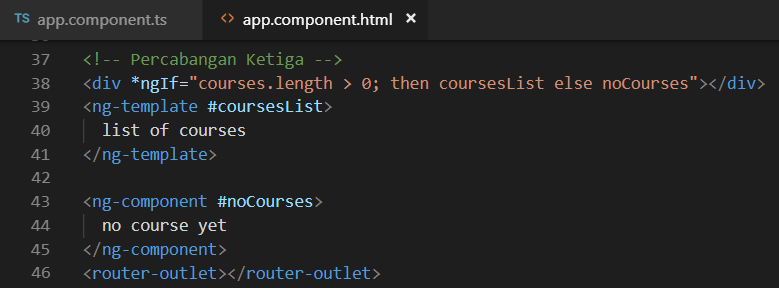
- Jika kita inspect element maka akan terlihat property hidden tidak terdapat kondisi true ataupun false
- Berbeda jika kita menggunakan ngIF terdapat bindings dengan nilai false
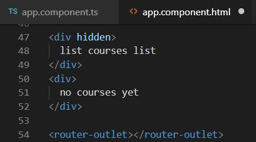
Praktikum - Bagian 3: ngSwitchCase
Menyediakan ekspresi switch untuk menyamakan dengan ekspresi ngSwitch yang tersedia. Ketika ekspresi sama, maka template NgSwitchCase menampilkan.
- Buka file app.component.html modifikasi codenya menjadi seperti berikut:

- Buka file app.component.ts tambahkan property viewMode (line 12)
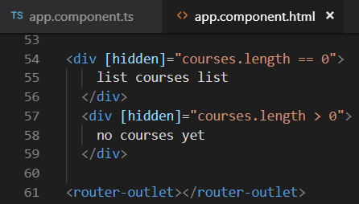
- Hasilnya seperti berikut saat diklik list view maka akan muncul list view content dan jika kita pilih ListView maka akan tampil tulisan List View Content
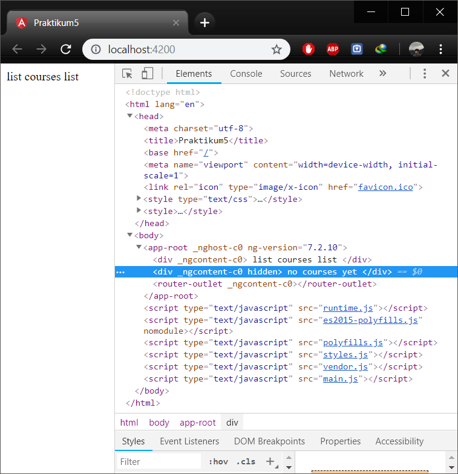
Bagian 4: ngFor
ngFor adalah sebuah directive pada angular yang berfungsi untuk melakukan looping terhadap beberapa data misal data kita adalah sebuah array, jadi directive ini akan melopping array kita pada bagian template.
- Buka app.component.ts property CoursesFor yang berisikan array (line 12)
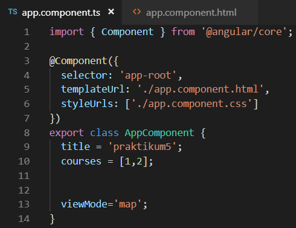
- buka file app.component.html tambahkan directive ngFor
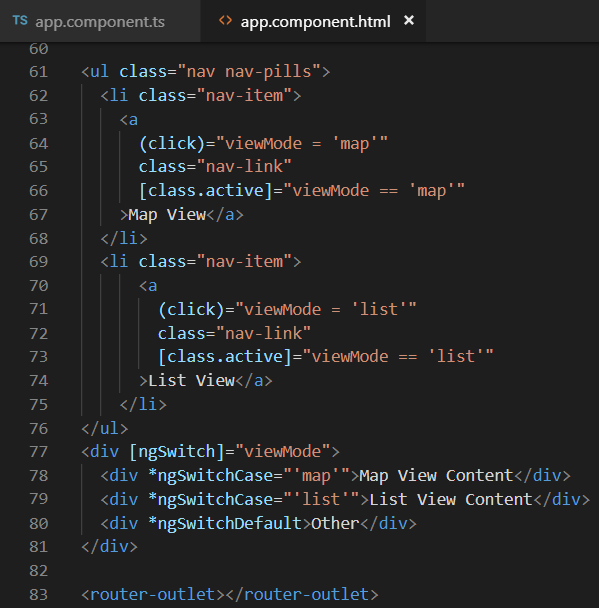
- Jalankan localhost maka hasilnya seperti berikut:
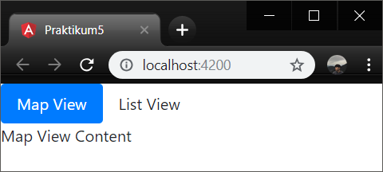
- kita juga dapat memberi tanda tertentu pada index yang bernilai ganjil dengan menggunakan isEven
https://angular.io/api/common/NgForOf
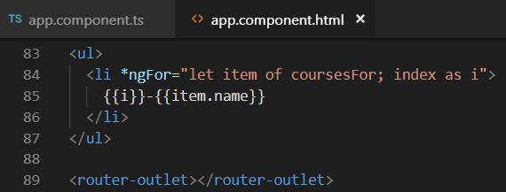
Bagian 5: ngFor dan change Detection
Dengan memodifikasi directive ngFor kita dapat melakukan penambahan atau pengurangan data.
- Pada percobaan ini kita akan menambahkan sebuah data array pada coursesFor, tambahkan button pada app.component.html
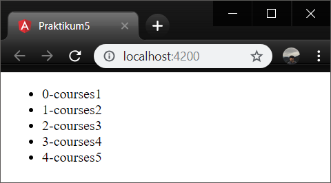
- tambahkan method onAdd(), pada file app.component.ts
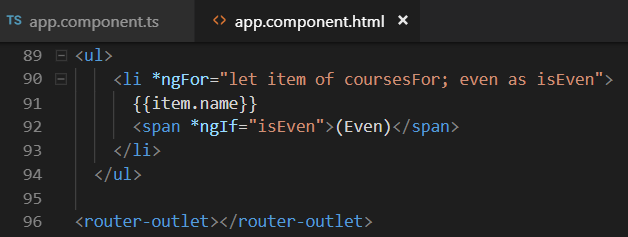
- Jalankan localhost maka hasilnya seperti berikut:
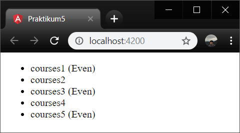
jika kita tekan button add maka akan ditambahkan sebuah data courses 6
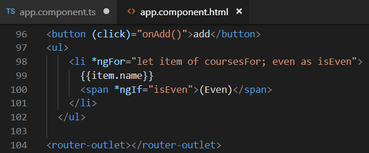
- Tambahkan sebuah method onRemove pada app.component.ts untuk melakukan penghapusan data

- Buka app.component.html dan tambahkan sebuah button untuk menghapus
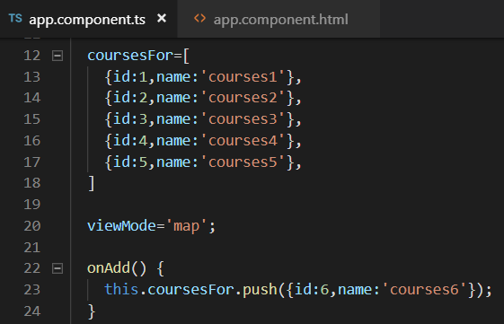
- Jalankan localhost maka hasilnya seperti berikut:
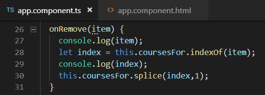
jika kita tekan button remove maka salah satu data akan hilang sementara
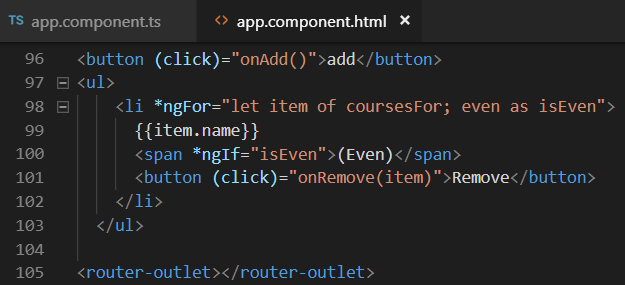
- buka file app.component.html tambahkan button

- buka file app.component.ts buatlah sebuah method
onChangedengan parameter item dan didalam method tersebut adanya perubahan string menjadiupdated
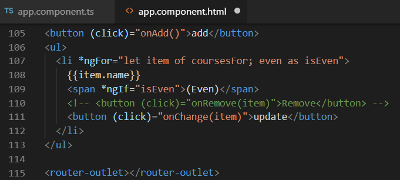
- Jalankan localhost maka hasilnya seperti berikut:
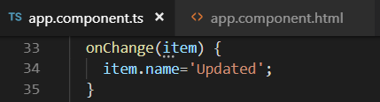
jika kita tekan button update maka salah satu data akan berubah menjadi update

Praktikum – Bagian 6: ngFor dan Trackby
- Buka file app.component.ts buatlah sebuah method dengan nama
loadCourses, tapi sebelumnya buat sebuah property dengan namacoursesForOne

- Buka file app.component.html dan tambahkan code seperti pada gambar
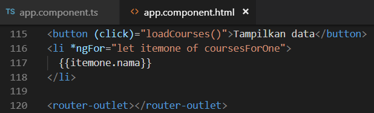
- Hasilnya saat button belum diclick
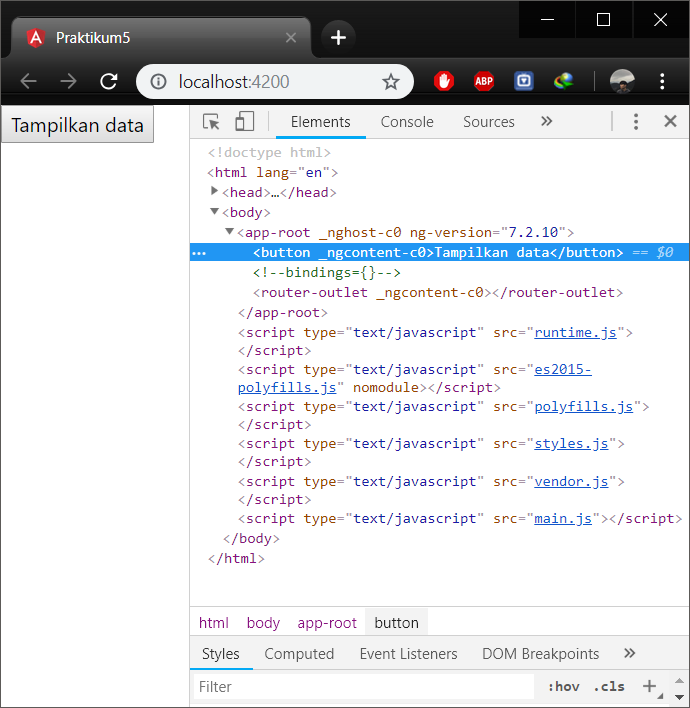
- Hasilnya saat button sudah diclick
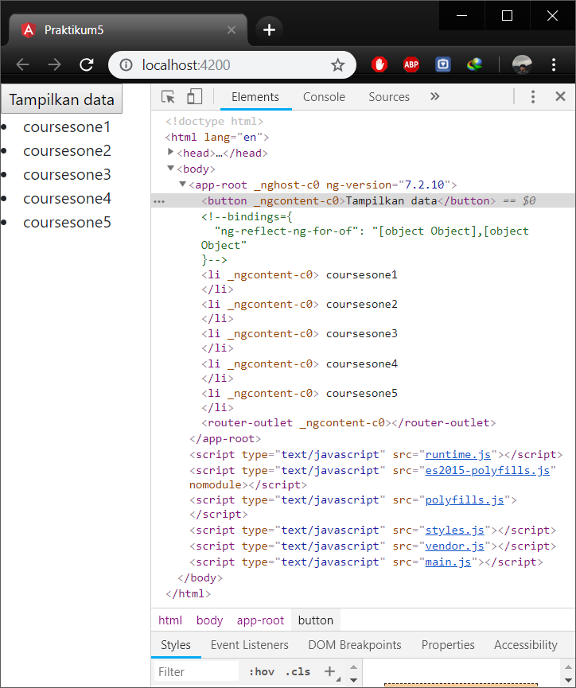
- Saat button belum diclick seperti pada gambar berikut

- Dan saat button diklik maka element ul akan muncul seperti pada gambar berikut
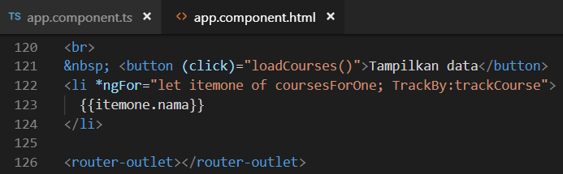
- Untuk menambahkan TrackBy dengan cara menambahkan pada file app.component.html pada directive ngFor
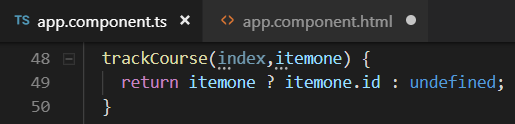
- Tambahkan juga sebuah method
trackCoursedengan parameter index dan itemone pada file app.component.ts
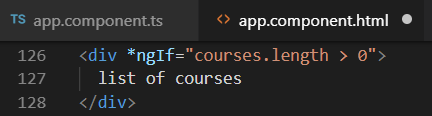
Praktikum – Bagian 7: The leading Asterik
Leading Asterik adalah tanda asterisk yang ada pada directive seperti *ngFor dsb. Adapun maksud leading asterisk pada sebuah directive adalah bahwa kita memberi tahu angular untuk menulis ulang markup tertentu
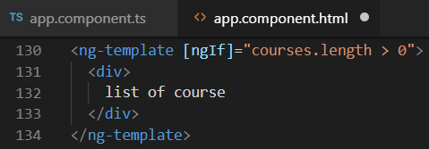 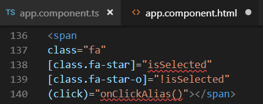
Bagian 8: ngClass
jika pada percobaan sebelumnya kita membuat component favorite menggunakan 2 class binding yaitu class binding fa-star dan fa-star-o
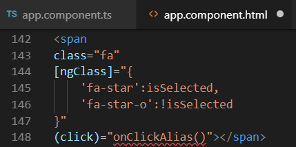
Bagian 9: Custom Directive
- Membuat directive dengan nama input-format terlebih dahulu dengan perintah seperti berikut
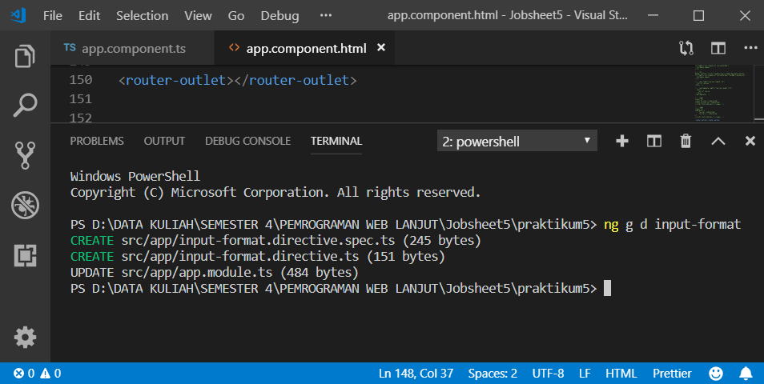
- Jika directive berhasil digenerate maka kita pastikan di app.module.ts pada
@NgModuleterdapat nama directive yang kita buat tadi
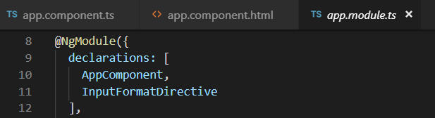
- Buka input-format.directive.ts dan tambahkan decorator HostListener seperti pada gambar berikut
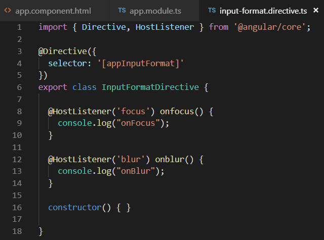
- Buka file app.component.html dan tambahakn code berikut
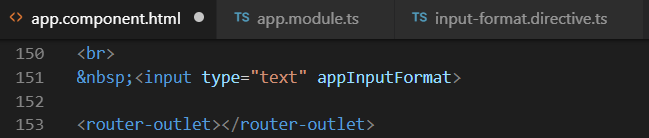
- Pada saat kita click pada textbox maka pada console akan muncul onFocus tetapi jika click diluar textbox maka console akan keluat onBlur
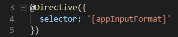
- Buka file input-format.directive.ts dan modifikasi codenya menjadi berikut

- Jalankan localhost dan berikan masukan dengan huruf besar semua setelah itu tekan tab, jika berhasil maka valuenya akan berubah menjadi huruf kecil semua


- Buka file app.component.html dan tambahkan property binding dengan nama format
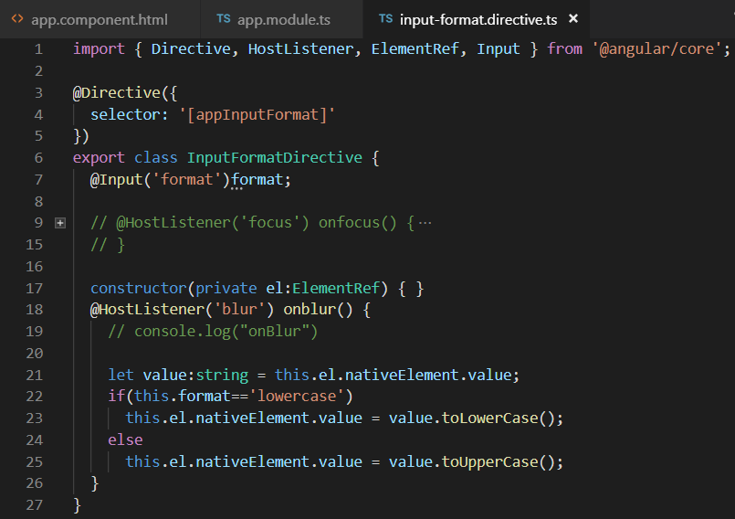
- Buka file input-format.directive.ts tambahkan decorator input dan modifikasi codenya seperti pada gambar berikut
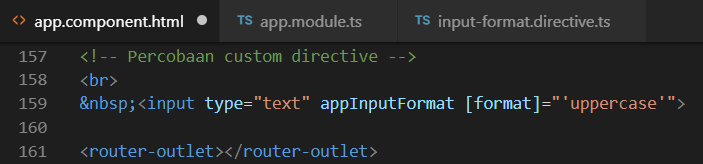
- Format disini adalah kondisi di app.component.html
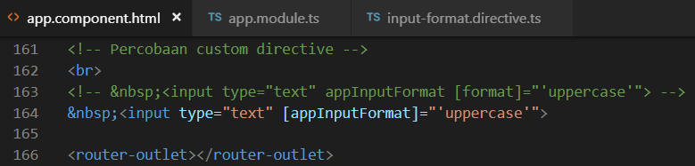
- Buka input-format.directive.ts dan tambahkan decorator input dengan parameter appInputFormat
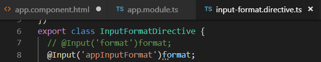